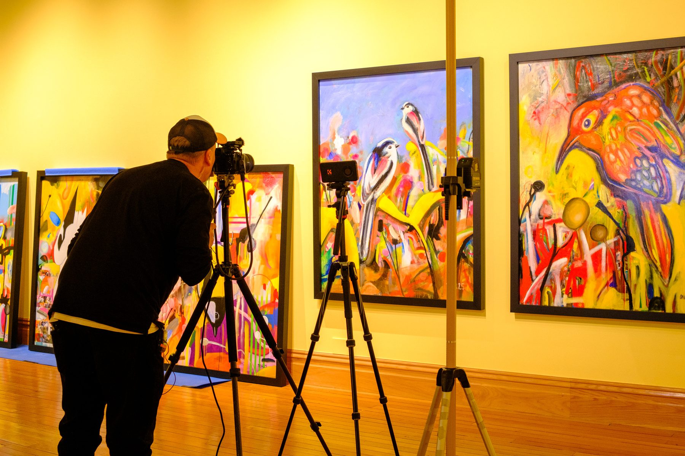
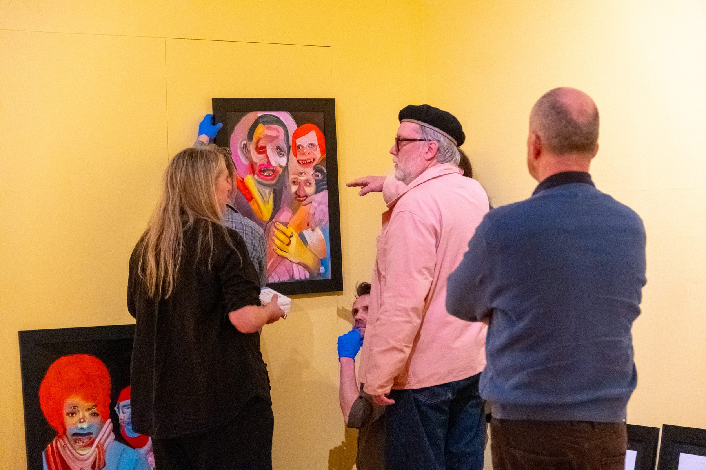
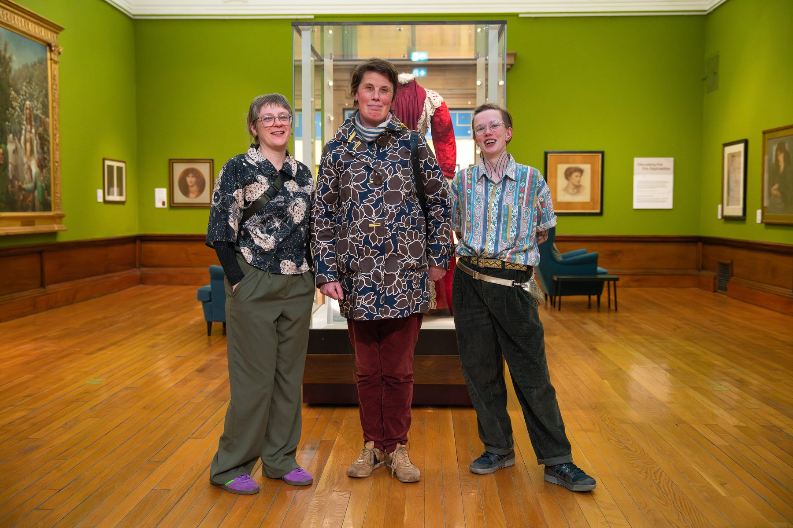
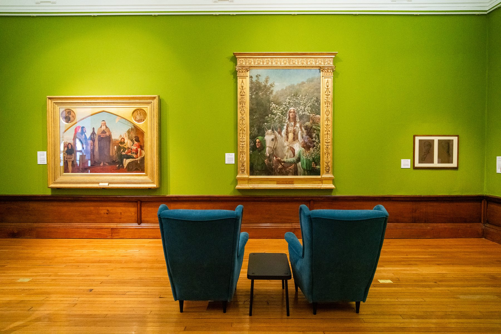
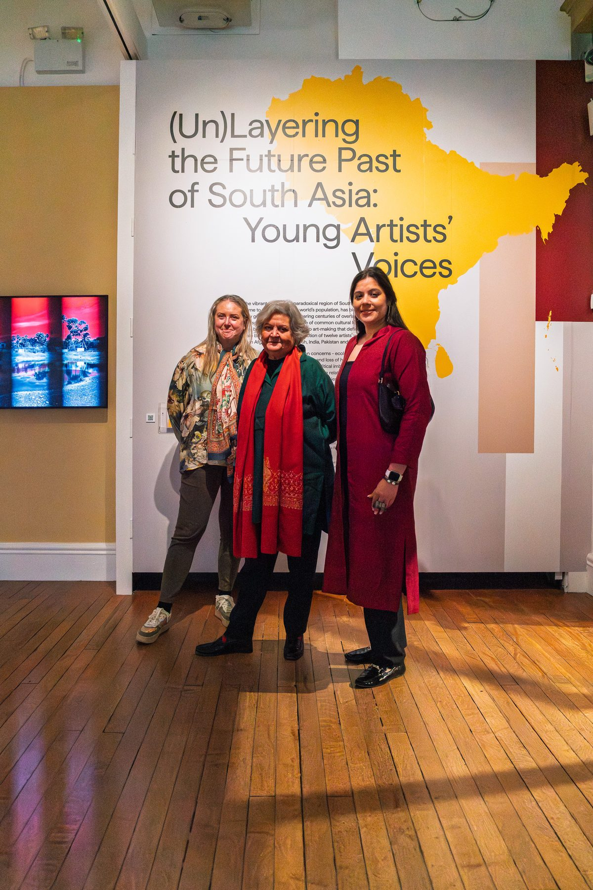
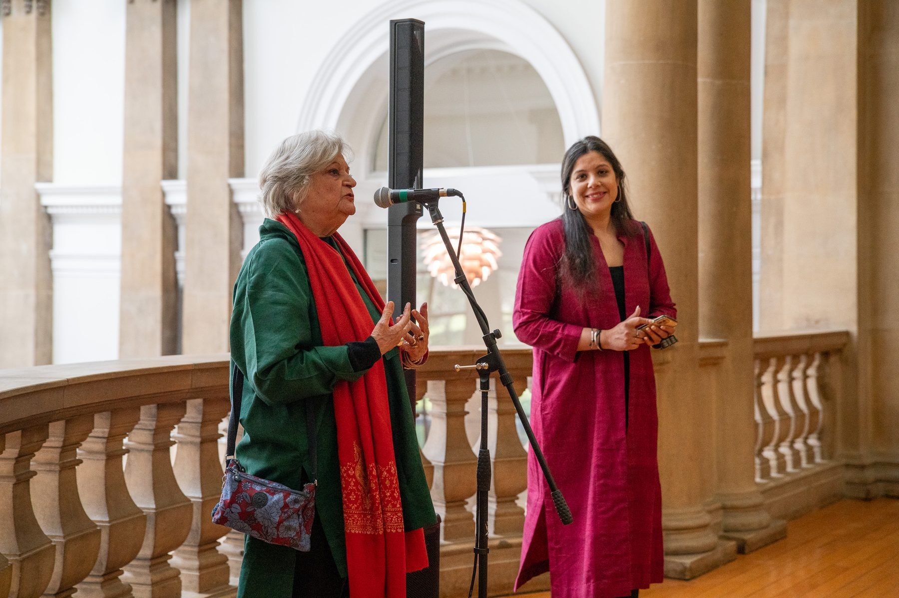
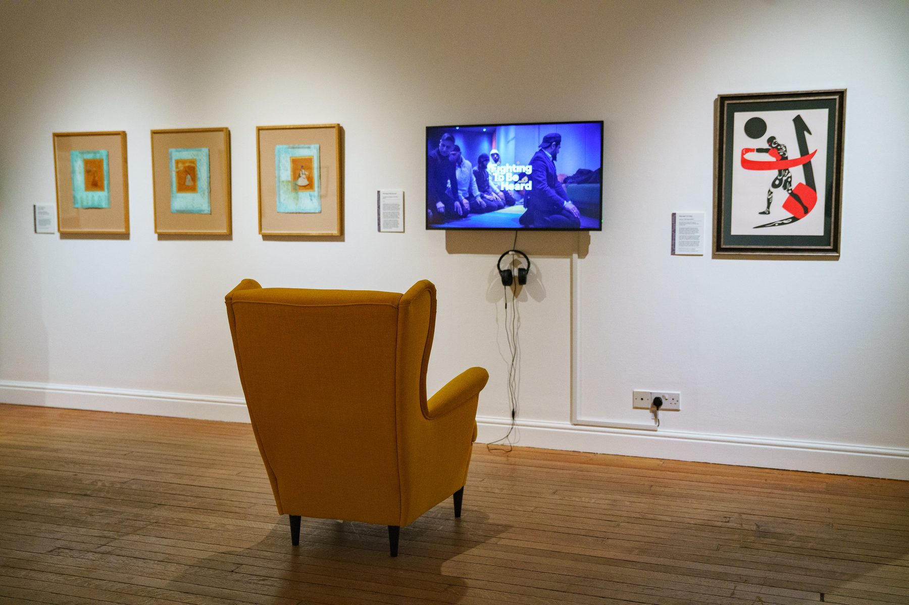
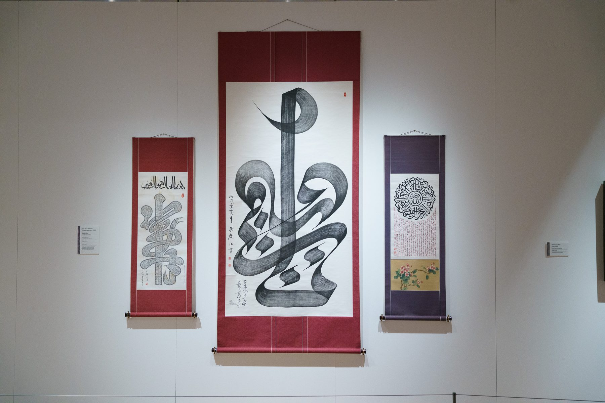

- Client
- Bradford Museums and Galleries
- Role
- Marketing & Communications Consultant
- Scope
- Strategy, Campaign Planning, Brand Development
- Year
- 2025–2026
Developing a comprehensive exhibitions and communications strategy for Cartwright Hall's 2026 season, building on the momentum of Bradford's City of Culture year and positioning the gallery for sustained growth.
Cartwright Hall sits within Lister Park and has been part of Bradford's civic culture since 1904. After the platform created by Bradford 2025, including hosting the Turner Prize and Jameel Prize, the gallery entered 2026 with an opportunity to move from festival year to durable cultural habit. I was commissioned to create a strategic framework connecting six gallery spaces, each with distinct curatorial visions, under a unified communications approach.
The strategy balanced four core themes—Rediscovery, Dialogue, Identity and Legacy—ensuring consistent messaging while celebrating the unique character of each exhibition, from Jim Moir's vibrant wildlife paintings to the Pre-Raphaelites Reframed with Equity Partnership, and emerging South Asian artists curated by Salima Hashmi.
Strategy Deliverables
- Communications strategy for six gallery exhibitions
- Season brand identity and key messaging framework
- Audience segmentation and targeting approach
- Campaign timeline and phased rollout plan
- Content strategy across owned, earned and social channels
- Press kit development with quotes, images and access information
- Monthly communications cycle and reporting framework
- Partnership coordination with Art Jameel, Equity Partnership and curators
2026 Season Exhibitions
- Jim Moir: Neo Fauna — New wildlife paintings
- The Pre-Raphaelites Reframed — Co-created with Equity Partnership
- South Asian Collection Focus — Curated by Salima Hashmi
- The Big Picture — Large-scale paintings from the collection
- Global Voices & Islamic Calligraphy — Art Jameel films and Bradford collection
- (Un)Layering the Future Past of South Asia — 11 emerging artists

Gallery installation for Jim Moir: Neo Fauna

Jim Moir directing the exhibition hang

Equity Partnership collaborators in The Pre-Raphaelites Reframed

The Pre-Raphaelites Reframed gallery at Cartwright Hall

(Un)Layering the Future Past of South Asia: Young Artists' Voices opening

Curators Salima Hashmi and Manmeet K. Walia at the exhibition launch

Global Voices & Islamic Calligraphy gallery with Art Jameel films

Islamic calligraphy scrolls from the Bradford collection

Cartwright Hall, Lister Park, Bradford